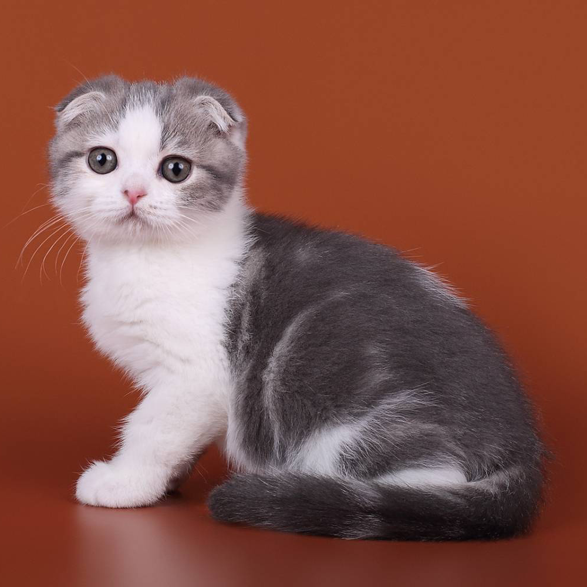

Скоттиш-фолд
| Родина и время возникновения | Порода признана | Окрас |
| Шотландия, 1961 г. | TICA, CFA. | Все сплошные окрасы, включая черепаховый,мраморный, тигровый, серебристый колорпойнт, норковый окрас и сепию. |
Характер
Вислоухий скоттиш-фолд отличается покладистым и невозмутимым характером. Они не относятся к активным и озорным кошкам, их скорее можно назвать интеллигентами, которые не позволят себе залазить на шторы или носиться по жилью. Эти животные предпочитают понежиться на диване рядом с хозяином, но излишние ласки, тисканье и повышенное внимание им ни к чему. Они предпочитают общение с человеком, уважающим их личное пространство. Несмотря на внешнее равнодушие, хозяина они любят и преданы ему, просто не привыкли показывать свои чувства.
p>Это одна из самых спокойных и уравновешенных пород в мире, у них отсутствует агрессия, конфликтные ситуации скоттиш-фолды стараются избегать. Мяукают они тихо и редко, в крайнем случае, например, когда их забыли покормить. Скоттиш-фолды любят заниматься йогой и принимать не характерные для других кошек позы – сидя вытягивают лапы вперед, стоят столбиком, подобно сурикатам, а спать предпочитают на спине. Также одной из особенностей этой породы является неумение прыгать с высоты, связанное со строением их вестибулярного аппарата, поэтому они предпочитают нахождение в нижней части комнаты.Кошки этой породы дружелюбные, они быстро привязываются к человеческой семье, а также к другим питомцам. Для детей это идеальные компаньоны, с которыми можно играть, но не стоит позволять обижать скоттиш-фолдов, ведь они обладают ранимой психикой. Если говорить о индивидуальных особенностях каждого животного этой породы, то нужно учитывать тот факт, что все котята разные, во многом их характер и психологическое состояние зависят от воспитания, которое дал хозяин.
Скоттиш-фолды имеют развитый интеллект, их можно обучать командам и трюкам, сложность состоит в том, что делать они будут только интересные для них действия. Наличие собственного мнения и нежелание во всем идти на поводу зачастую трактуется, как обыкновенная лень. Эти животные относятся к стрессоустойчивым, поэтому они хорошо переносят походы к ветеринару, поездки, участия в выставках и приход гостей.
Здоровье
Шотландские вислоухие кошки живут в среднем 15 лет. Отличаются хорошим здоровьем, однако имеют склонность к заболеваниям суставов хвоста, коленей и голеностопа, а также к заболеванию сердца, известному как гипертрофическая кардиомиопатия.